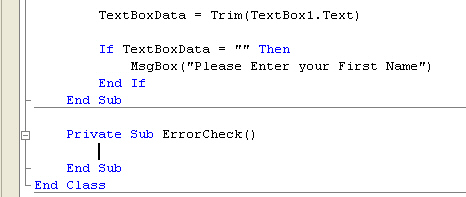
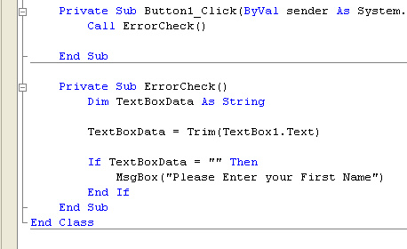

Create your Own Subs in VB .NET
In the previous part, you learnt what a Sub is, and that it doesn't return a value, unlike a Function. In this part, you'll learn how to create your own Subs in VB .NET. Sub, by the way, is short for Subroutine
Here’s what we’re going to do. We’ll set up a text box on a form. The text box will be a First Name text box, and we’ll be checking that the user has actually entered something into it.
So, do this:
- Start a new project, and put a Text Box on your new Form.
- Put a button on the Form, too.
- Double lick your button to see the coding window
- Add the following code for the button:
Dim TextBoxData As String
TextBoxData = Trim(TextBox1.Text)
If TextBoxData = "" Then
MsgBox("Please Enter your First Name")
End If
Run the programme and test it out. Don’t enter anything in your textbox, but just click your button. Your message box should display.
Now, all that code is inside the button. More likely than not, we'd be writing more code for that button. In fact, we could be writing lots of code. The code we write could get a bit long and complex. Do we have to have that error checking code in there? And wouldn't we have to type it out all over again, if we wanted to check another textbox from a different button?
The answer to our two questions are, Not at all, and Yes we would!
To solve the problem, we'll chop that code from the button, and write a Sub for it. To write your own Sub, your cursor needs to be outside of the button code, and on a new line. But before the "End Class". So, on a new line outside the button code type the following:
Private Sub ErrorCheck()
When you've typed that, hit the enter key on your keyboard. Visual Basic will add the End Sub for you. The name "ErrorCheck" is entirely our own, and we could have called it almost anything we liked. But it's better to stick to something descriptive.
Your code window will then look like this one:

Now, cut the code from your button and paste it between these two new lines, where the cursor is in the image above.
You have just created your own Subroutine!
How to use your new Sub
But the Sub is not doing much good where it is. We need a way to use that code. To use our new Sub, we have to tell Visual Basic to execute the code. We do that simply by referring to the Sub by name.
So click inside the button code, just before the End Sub of the button. Type the following:
Call ErrorCheck()
You don't have to use the "Call" word. Try taking that word out altogether,
and then testing the programme again. The programme should run exactly the same.
But using the "Call" word makes your code easier to read, and tells
you that you are executing your own Subroutine on this line.
Your coding window should now look like this:

Run your programme and test it out. You should get the Message Box again, when nothing is in the Textbox.
Add another button to your form. Double click the new button to get at the code. Then type Call ErrorCheck() as the code for it. Run your programme again, and click your new button. You should get the Message box popping up, when nothing is entered into the Textbox.
The point about this is that you have created your own code segment. You can use this segment of code whenever you like, just by referring to it by name. Of course, you can have your code check more than one Textbox. You can check as many as you like. And for whatever you like. You can include the code you wrote to check for a correct email address, as well. But all that error checking code is no longer clogging up your button code.
In the next part, we'll take a look at how you can pass text from a text box to your Subroutines - Paramaters, in other words.